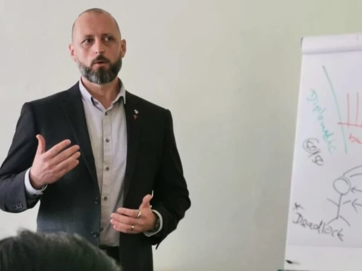
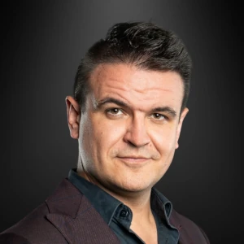

Naučím vás ovládat umění vyjednávání a ovlivňování. Jsem Zdeněk Drexler, specialista na komunikaci a vyjednávání s
více než 20 lety zkušeností. Pomůžu vám získat sebevědomí, jistotu a nástroje k tomu, abyste dosáhli svých cílů – ať už v byznysu nebo v
osobním životě.
Cílené vyjednávání pro váš úspěch
👉 Chcete umět řídit vyjednávání jako profesionál?
👉 Potřebujete překonat obavy z konfliktů a zvládat složité situace s přehledem?
👉 Toužíte uzavírat dohody, které přinášejí skutečnou hodnotu?
Se mnou se naučíte, jak proměnit každé vyjednávání v příležitost k úspěchu.
SLUŽBY
Motto: Cílem vyřešení konfliktu není vítězství nebo porážka.
Je to dosažení porozumění a opuštění naší potřeby mít pravdu.
Workshopy
Cílený vyjednavač: Naučte se řídit vyjednávání jako profesionál
Tento jedinečný workshop vás provede všemi kroky úspěšného vyjednávání.
Postavíme spolu čtyři klíčové pilíře: příprava, vstup do vyjednávání, řízení procesu a zvládání eskalací.
Co se naučíte?
✅ Jak se připravit na každé vyjednávání a být o krok napřed
✅ Jak budovat vztah a důvěru s protistranou
✅ Jak zvládat emoce, eskalace a stresové situace
✅ Jak uzavírat dohody s maximální přidanou hodnotou
👥 Pro koho je workshop určen? Manažeři, podnikatelé, obchodníci, personalisté i jednotlivci, kteří chtějí zlepšit své vyjednávací a komunikační dovednosti.
📅 Rezervujte si místo nyní a získejte nástroje, které vám otevřou nové příležitosti!
Chcete-li workshop pro vás, ve vašich prostorách, kontaktujte mě.
Konzultace a trénink pro firmy
Zvyšte výkon svého týmu pomocí efektivní komunikace a vyjednávání
Konzultace a tréninky pro firmy jsou navrženy tak, aby posílily schopnosti vašeho týmu, zlepšily výsledky a zajistily dlouhodobou úspěšnost
vašeho podnikání. Pomohu vám nastavit strategii vyjednávání, která odpovídá vašim obchodním cílům, a poskytnu praktické nástroje, které váš
tým okamžitě využije v praxi.
Co trénink pro firmy obsahuje?
✅ Identifikace slabých míst – Analyzuji aktuální stav komunikace a vyjednávacích schopností vašeho týmu.
✅ Trénink strategického ovlivňování – Naučím váš tým, jak efektivně oslovit klienty, dodavatele nebo partnery a získat si jejich důvěru.
✅ Řešení reálných scénářů – Budeme pracovat na konkrétních situacích, se kterými se váš tým potýká, a hledat optimální řešení.
✅ Motivace a týmová spolupráce – Zaměřím se na posílení vztahů uvnitř týmu, což povede k lepší koordinaci a vyšší produktivitě.
✅ Měřitelné výsledky – Nastavíme jasné cíle a vytvoříme plán kroků, které povedou k viditelnému zlepšení.
👥 P ro koho je trénink určen?
Pro malé i velké firmy, které chtějí zlepšit komunikaci, zvýšit efektivitu týmu a posílit vyjednávací pozici na trhu. Ať už se jedná o obchodní oddělení, management nebo interní komunikaci, tento trénink je přizpůsoben na míru vašim potřebám.
📅 Kontaktujte mě pro vytvoření individuálního plánu tréninku a posuňte svůj tým na novou úroveň!
Individuální mentoring
Personalizovaný přístup k vašemu mistrovství ve vyjednávání
Individuální mentoring je nejrychlejší a nejefektivnější cesta, jak zdokonalit své dovednosti v ovlivňování a vyjednávání. V tomto programu se zaměřím na vaše specifické potřeby, situace a cíle, abych vám pomohl dosáhnout maximálního potenciálu.
Co vám individuální mentoring přinese?
✅ Efektivní příprava na vyjednávání – Naučíte se, jak analyzovat situaci, identifikovat klíčové potřeby protistrany a stanovit si jasné cíle.
✅ Sebejistota v komunikaci – Pomohu vám odstranit strach z konfliktu a posílím vaše sebevědomí při náročných jednáních.
✅ Strategické myšlení – Naučím vás, jak vytvářet taktické plány a předvídat kroky protistrany.
✅ Okamžitá aplikace dovedností – Budeme pracovat na konkrétních situacích, které řešíte, a hledat nejefektivnější řešení.
👤 Pro koho je mentoring vhodný?
Pro manažery, lídry, podnikatele, obchodníky nebo jednotlivce, kteří chtějí posunout své vyjednávací schopnosti na profesionální úroveň. Ať už řešíte obchodní dohody, konflikty v týmu nebo důležité životní situace, individuální mentoring vám poskytne praktické nástroje a jistotu.
📅 Rezervujte si individuální konzultaci ještě dnes a objevte sílu cíleného vyjednávání!
O MNĚ
Motto: Cílené vyjednávání Klíč k porozumění, ovlivnění a dokonalé dohodě.
Zdeněk Drexler – váš průvodce světem vyjednávání a ovlivňování
Jsem specialista na cílené vyjednávání, který kombinuje hluboké znalosti s praktickými zkušenostmi z obchodu, diplomacie a
krizových situací. Během své kariéry jsem vedl vyjednávání s politiky, obchodními partnery i generály, a to na lokální i mezinárodní úrovni.
Co mě odlišuje?
✅ 20+ let zkušeností v komunikaci a vyjednávání
✅ Tréninky v globálních firmách s miliardovými obraty i pro individuální klienty
✅ Absolvovaný trénink u zakladatele Jednotky krizového vyjednávání FBI Garyho Noesnera
✅ Schopnost naučit vás praktické techniky, které můžete okamžitě využít
Moje vášeň?
Učit lidi, jak ovládnout své komunikační schopnosti, překonat strach z konfliktu a stát se sebevědomými vyjednavači.
💡 Společně proměníme váš přístup k vyjednávání a posuneme vaše schopnosti na novou úroveň.

MISE
Mým posláním je učit lidi, jak ovlivňovat, vyjednávat a komunikovat s jasným cílem. Ukazuji jim, jak budovat vztahy,
odhalovat motivy protistrany a dosahovat dohod, které přinášejí maximální přidanou hodnotu pro obě strany. Věřím, že každý
může ovládnout umění vyjednávání a proměnit ho v silnou stránku ve svém profesním i osobním životě.
VIZE
Dovést lidi na celoživotní cestu, kde je ovlivňování, vyjednávání a efektivní komunikace přirozenou součástí každodenního života.
Přeji si změnit vnímání vyjednávání z boje na proces porozumění a spolupráce, kde získávají obě strany.
Základním kamenem mé vize je boj proti dezinformacím a mýtům, které podkopávají důvěru a schopnost komunikovat.
Mým cílem je šířit osvětu a ukázat, že skrze správně zvolená slova můžeme nejen dosáhnout svých cílů,
ale také vytvářet pevné a dlouhodobé vztahy.
ZKUŠENOSTI
👉 Policejní akademie ČR v Praze
V rámci studia na Policejní akademii ČR v Praze jsem studoval, mimo jiné, Základy teorie a praxe krizového řízení, Soudní psychologii nebo ku příkladu Kriminalistickou taktiku a metodiku.
👉 Trénink u Gary Noesnera
Gary Noesner je bývalý šéf jednotky krizového vyjednávání FBI ((Chief of the FBI’s Crisis Negotiation Unit)) a vyučující na FBI Academy. V roce 2023 jsem jeden z pouhých 12 lidí v ČR, kteří tento privátní, neveřejný trénink absolvovali.
👉 Workshopy - Phil Andrew & Scott Tillema
Phil Andrew - special agent FBI, Scott Tillema - SWAT Chicago. Praktické workshopy obou Američanů mě naučily na konkrétních případech jak přesně používat techniky, taktiky a strategie k úspěšnému dosažení dohody.
👉 Mastery club Praha
V letech 2022 - 2023 jsem se pravidelně se účastnil a v roce 2023 také vedl vyjednávací tréninky v Mastery clubu Praha v prostorách, kde psal Václav Havel
👉 NegotiCON 2023
V roce 2023 jsem se zúčastnil konference o vyjednávání a komunikaci NegotiCON 2023, kde jsem byl součástí pořádajícího týmu.
👉 Praxe policisty
V letech 2005 - 2022 jsem byl policistou - od ulice po pozici komisaře - vyšetřovatele na 1. oddělení obecné kriminality, díky čemuž tíhnu ke komunikačním a vyjednávacím metodám americké FBI. Večer 20.12.2011 jsem poprvé použil krizovou komunikaci, když šlo o lidský život - úspěšně. Téměř 10 let jsem byl členem pořádkové jednotky, tzv. "těžkooděnec" Boxer 201.
👉 Vyjednávání s politiky
V rámci náročných vyjednávání jsem v letech 2016 - 2022 jednal s budoucím prezidentem ČR gen. Petrem Pavlem, s premiéry Bohuslavem Sobotkou nebo Andrejem Babišem a dále pak s ministry Milanem Chovancem, Janem Hamáčkem, Vítem Rakušanem nebo Alenou Schillerovou
👉 Přednášky a workshopy pro studenty SŠ a VŠ
Přednášel jsem pro studenty Vysoké školy ekonomické v Praze; vedl jsem výuku pro studenty Pražského humanitního gymnázia; vedl jsem workshopy vyjednávání pro fiktivní firmy na Obchodní akademii Ústí nad Labem nebo Střední škole diplomacie a veřejné správy
👉 Odborná konzultace ke knize "Konečná zastávka"
Spolupodílel jsem se, vnesením odborného vhledu a expertní perspektivy, na knize "Konečná zastávka", která vyšla 18.05.2022.
Petr Vojnar - český moderátor, herec, zpěvák a specialista na komunikační dovednosti
25 let se působím nejen ve světě showbyznysu, ale také jako mentor a specialista na komunikační dovednosti a veřejné vystupování. V roce 2023 jsem založil SEBA academy, v rámci které spolupracuji s těmi nejlepšími odborníky ve svých oborech, abychom maximálně kvalitně vzdělávali jak jednotlivce, tak celé týmy.
Zdeněk Drexler, coby specialista v Akademii sebevědomého řečníka na ovlivňování a vyjednávání, je tou nejlepší volbou. Je mistr svého oboru, který dokáže své hluboké znalosti a dovednosti efektivně předávat klientům. Pod jeho vedením rychle rostou a dosahují úspěchů a chtěných výsledků.
Pokud toužíte posunout své vyjednávací a ovlivňovací schopnosti na zcela novou úroveň, Zdeněk je pro vás tou nejlepší volbou. Jeho jedinečný přístup a osvědčené techniky vám dodají sebevědomí a nástroje, které potřebujete k dosažení cílů.
Zdeňka doporučuji všem, kteří chtějí uspět v oblasti vyjednávání a ovlivňování. Nečekejte a využijte příležitosti spolupracovat s jednou z největších hvězd této problematiky.
Nikol Růžičková - realitní investorka
Jsem realitní investorka a měla jsem tu čest absolvovat mentoring pod vedením Zdeňka Drexlera. Musím říct, že jeho přístup mě ohromil. Jeho hluboké znalosti, profesionální zkušenosti a schopnost přizpůsobit se individuálním potřebám mě posunuly na zcela novou úroveň.
Zdeněk je nejen odborník na vyjednávání, ale také skvělý mentor, který dokáže jasně vysvětlit strategie a procesy. Díky jeho radám jsem výrazně zlepšila své dovednosti v oblasti komunikace, analýzy obchodních příležitostí a uzavírání výhodných dohod.
Co oceňuji nejvíce, je jeho pragmatický a zároveň lidský přístup. Umí motivovat, ale také nastavit realistická očekávání, což je v realitním byznysu klíčové. Výsledky na sebe nenechaly dlouho čekat – jeho strategie mi pomohly uzavřít několik velmi úspěšných transakcí.
Pokud hledáte někoho, kdo vám pomůže posunout váš byznys nebo vyjednávací schopnosti na novou úroveň, Zdeněk Drexler je jasná volba. Jeho mentoring vnímám jako jednu z nejlepších investic, jakou jsem kdy udělala.
Děkuji, Zdeňku, za vaši podporu a cenné rady!
Veronika Čánová - Senior auditor, Komerční banka
Potkala jsem Zdeňka na Mastery Clubu při trénincích vyjednávání, kde mě zaujal svým nadhledem, příjemným a nenásilným vedením skupiny.
A také tím, že nejenže učí aktivní naslouchání, on ho dokonce i umí. Navic jsem se dozvěděla, že máme společné téma - vyšetřování podvodů.
Pozvala jsem ho tedy, aby pro Czech ACFE Chapter vedl spolu s Jan Mexo Řehákem Fraud talk na téma Vyjednávání a forenzní vyšetřování.
Fraud talk vzbudil velký zájem a byl opravdu inspirativní. Zdeňkův příspěvek byl dobře připravený, strukturovaný a postavený na jeho zkušenostech z práce u PČR.
Spolupráce se Zdeňkem byla skvělá a doufám, že si ji zopakuji.
Gabriela Tvrdíková - Senior Manager - AI & Data Deloitte; Chairman - Czech ACFE Chapter
Moc děkujeme za podnětný seminář a sdílení cenných zkušeností. Byla to super akce, na kterou rádi navážeme, těšíme
se na spolupráci.

Denis Tureček - Strategický poradce pro komunikaci
Se Zdeňkem spolupracuji už více než rok a za tu dobu jsem se od něj naučil mnohé. Zkušenosti z mnohdy náročných,
až nereálných situací u Policie totiž jen tak někde nenajdete. Je trpělivý, pečlivý a důkladný. Během vyjednávání dokáže
efektivně držet linku, jít k dohodě a nenechá se rozhodit. A já se snažil na trénincích MasteryClubu opravdu hodně. Z pozice
commandera, vedoucího vyjednávání, umí krásně vymezit prostor, řídit celý průběh a využívat synergie, kterou tým vytváří.
Jeho projev je kultivovaný a pevný. Zdeněk je právě ten vyjednavač, který s úsměvem na tváři a pochopením v očích projde
hořící budovou plnou ozbrojených skupin právě pro to, aby se domluvil na kvalitní dohodě. Zdeněk je právě ten vyjednavač,
od kterého se chcete učit nebo se jím nechat zastupovat.
Tomáš Burda - Sales director
Zdeňkovy postupy při vyjednávání jsou specifické, precizní a disciplinované. Bývalého kriminalistu Zdeněk v sobě nezapře.
Stejně tak specifické jsou Zdeňkovy tréninky vyjednávání, které můžete navštěvovat každou druhou středu v Mastery Clubu v Praze.
Zdeňka jsem zažil v plné parádě včera 23.05.2023 na 1. květnovém Fraud talku, který pořádala česká odnož mezinárodní Asociace
certifikovaných forenzních auditorů pro své členy. Musím dodat, že kombinace Zdeňkovy odbornosti bývalého kriminalisty a
vyjednavače byla pro všechny přítomné auditory velkým přínosem.
Ing. Stanislav Šec - bývalý místostarosta Plzně 3, programátor, majitel společnosti QuickSoft CZ
Nedávno jsem založil firmu QuickSoft CZ a zjistil jsem, že už nestačí být skvělý jen ve vývoji webových aplikací, ale že je potřeba zlepšovat i své soft skills.
Proto jsem vyhledal workshop, kde mě Zdeněk Drexler provedl procesem vyjednávání. Pochopil jsem snadno co dělám špatně a jak se zlepšit.
Byl to skvělý večer plný informací a já se těším příště.